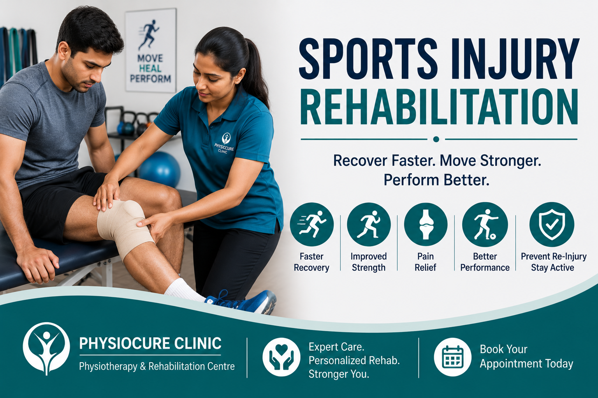

Sports Injury Rehabilitation – Recover Faster, Return Stronger
Sports injury rehabilitation helps athletes and active individuals recover safely, regain strength, improve flexibility, and return to sports with confidence while reducing the risk of re-injury.
What is Sports Injury Rehabilitation?
Sports injuries can occur during recreational activities, fitness training, or competitive sports. They may affect muscles, ligaments, tendons, joints, or bones and can range from mild strains to severe ligament tears.
Sports injury rehabilitation is a structured physiotherapy program that focuses on relieving pain, restoring movement, rebuilding strength, improving balance, and safely returning athletes to their sport.
Common Sports Injuries
- Muscle Strains
- Ligament Sprains
- ACL Injury
- Meniscus Injury
- Ankle Sprain
- Tennis Elbow
- Golfer's Elbow
- Rotator Cuff Injury
- Hamstring Injury
- Achilles Tendon Injury
- Shin Splints
- Shoulder Dislocation
Common Symptoms
- Pain during activity
- Joint swelling
- Reduced range of motion
- Muscle weakness
- Difficulty walking or running
- Joint instability
- Tenderness around the injury
- Bruising
- Difficulty returning to sports
Common Causes
- Improper warm-up
- Overtraining
- Poor sports technique
- Muscle imbalance
- Weak core muscles
- Sudden twisting movements
- Falls during sports
- Inadequate recovery time
- Improper footwear
How Physiotherapy Helps
At PhysioCure Clinic, every rehabilitation program is individually designed according to the type of injury, sport, and recovery goals.
- Detailed Injury Assessment
- Pain Relief Therapy
- Manual Therapy
- Ultrasound Therapy
- Joint Mobilization
- Strength Training
- Flexibility Exercises
- Balance & Proprioception Training
- Functional Sports Training
- Return-to-Sport Programme
Benefits of Sports Rehabilitation
- Faster recovery
- Reduced pain and inflammation
- Improved flexibility
- Increased muscle strength
- Better joint stability
- Enhanced sports performance
- Reduced risk of re-injury
- Safe return to sports activities
Preventing Sports Injuries
- Warm up before every workout.
- Cool down after exercise.
- Strengthen core muscles.
- Wear appropriate sports footwear.
- Practice correct sports techniques.
- Avoid overtraining.
- Stay hydrated.
- Take adequate rest between training sessions.
- Seek early treatment for minor injuries.
🛒 Recommended Sports Injury Rehabilitation Products
We have selected a few products that may be useful for sports rehabilitation, strengthening, mobility, balance and everyday recovery. Please use rehabilitation equipment according to the guidance of a qualified physiotherapist or healthcare professional, particularly after a significant injury, surgery or when pain persists.
Affiliate Disclosure: As an Amazon Associate I earn from qualifying purchases.
🛒 View Recommended Sports Rehabilitation Products on AmazonWhy Choose PhysioCure Clinic?
- 23+ Years of Clinical Experience
- Personalized Sports Rehabilitation Programs
- Evidence-Based Physiotherapy
- Advanced Electrotherapy Equipment
- Sports-Specific Exercise Programmes
- One-to-One Physiotherapy Sessions
- Conveniently Located near Padi, Mogappair & JJ Nagar
Frequently Asked Questions
When should I start physiotherapy after a sports injury?
Early physiotherapy helps reduce pain, control swelling, and speeds up recovery. It is best to consult a physiotherapist as soon as possible after the injury.
Can physiotherapy help avoid surgery?
Many sports injuries can be successfully managed with physiotherapy. However, severe ligament tears or fractures may require surgical treatment followed by rehabilitation.
How long does sports rehabilitation take?
Recovery depends on the type and severity of the injury. Minor injuries may recover within a few weeks, while major injuries may require several months of rehabilitation.
Can I return to sports after rehabilitation?
Yes. A structured rehabilitation programme ensures you regain strength, flexibility, balance, and confidence before safely returning to sports.
Book Your Sports Injury Consultation
Whether you are a professional athlete or a fitness enthusiast, our sports rehabilitation programme can help you recover safely, regain peak performance, and return to your favourite sport with confidence.
Contact Us